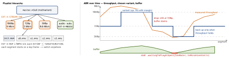

ios-platform · folio
In one line: HLS = plain HTTP files: a multivariant playlist lists the same video
at several bitrates, each variant is a media playlist of short segments
(.ts or fMP4). The player measures throughput and buffer and switches variant at
segment boundaries (ABR). In AVFoundation you watch state —
AVPlayerItem.status, AVPlayer.timeControlStatus + reasonForWaitingToPlay — and
tune startup, caps and buffer, never the download itself.
Download PDF Print view LaTeX source


HLS (RFC 8216)
- Multivariant playlist:
EXT-X-STREAM-INFper variant —BANDWIDTH(peak bit/s, required),AVERAGE-BANDWIDTH,CODECS,RESOLUTION,FRAME-RATE, group refs;EXT-X-MEDIA= alternate audio/subtitle renditions (GROUP-ID,LANGUAGE);EXT-X-I-FRAME-STREAM-INF= key frames only, for scrubbing thumbnails. - Media playlist:
EXT-X-TARGETDURATION,EXT-X-MEDIA-SEQUENCE,EXTINFper segment. VOD ends withEXT-X-ENDLIST; live = sliding window the client re-fetches about every target duration;EVENT= append-only.EXT-X-DISCONTINUITYat an ad splice. - Segments: MPEG-TS or fMP4/CMAF + init (
EXT-X-MAP). Keys:EXT-X-KEYAES-128/SAMPLE-AES; FairPlay =skd://URI. - LL-HLS (8216bis draft): partial segments (
EXT-X-PART, sub-second),PRELOAD-HINT, blocking reload (?_HLS_msn=…&_HLS_part=…held until it exists; server saysCAN-BLOCK-RELOAD=YES),RENDITION-REPORT, delta playlists (EXT-X-SKIP). Latency ≈ TV broadcast.
ABR — what you control
- The player estimates bandwidth from segment downloads + buffer health and picks the start variant itself;
startsOnFirstEligibleVariant(iOS 14) forces the first listed one. - Caps on
AVPlayerItem:preferredPeakBitRate(bit/s, 0 = none) ·…ForExpensiveNetworks(iOS 15, cellular) ·preferredMaximumResolution. preferredForwardBufferDuration(s; 0 = system decides): low = fast start, more stalls; high = memory + bytes wasted when the user scrolls away.
AVFoundation state — watch, don’t poll
AVURLAsset(media;try await asset.load(.isPlayable, .duration)) →AVPlayerItem(presentation:status.unknown/.readyToPlay/.failed,isPlaybackLikelyToKeepUp,loadedTimeRanges, logs) →AVPlayer(rate,timeControlStatus.paused/.waitingToPlayAtSpecifiedRate/.playing) →AVPlayerLayer·AVPlayerViewController· SwiftUIVideoPlayer.reasonForWaitingToPlay:.toMinimizeStalls,.evaluatingBufferingRate,.noItemToPlay,.interstitialEvent,.waitingForCoordinatedPlayback.automaticallyWaitsToMinimizeStalling(default true):play()may wait for buffer.false= start at once; an empty buffer then pauses (rate 0). Loops:AVPlayerLooper+AVQueuePlayer.
Example — observe, cap, measure
let item = AVPlayerItem(asset: AVURLAsset(url: hlsURL))
item.preferredForwardBufferDuration = 2 // feed: start fast
item.preferredPeakBitRateForExpensiveNetworks = 1_500_000
let player = AVPlayer(playerItem: item)
obs = [item.observe(\.status) { it, _ in
if it.status == .failed { report(it.error) } },
player.observe(\.timeControlStatus) { p, _ in
spin(p.timeControlStatus == .waitingToPlayAtSpecifiedRate) },
layer.observe(\.isReadyForDisplay) { l, _ in // hide poster
poster.isHidden = l.isReadyForDisplay }]
NotificationCenter.default.addObserver(forName: .AVPlayerItemNewAccessLogEntry,
object: item, queue: .main) { _ in
guard let e = item.accessLog()?.events.last else { return }
qoe.send(e.startupTime, e.numberOfStalls, e.indicatedBitrate) }
player.play()Android: Media3 ExoPlayer (HlsMediaSource, DASH too),
TrackSelectionParameters caps, LoadControl buffers, MediaSessionService for
background, Widevine DRM.
Startup time and feeds
- Start fast: create the asset/item before the tap (prefetch the next cells), load keys async, short buffer target, a low first variant, show a poster until
isReadyForDisplay. Measure time-to-first-frame, notplay()returning. - Feeds: a pool of 2–3
AVPlayers, not one per cell; swap withreplaceCurrentItem(with:); only the most-visible cell plays (muted); set off-screen items tonil— each item holds buffers and a decoder. Cap resolution to the cell’s pixels.
Background, PiP, AirPlay
- Background audio:
AVAudioSession.playback+UIBackgroundModes: audio. For a video,playerLayer.player = nilon background (QA1668), re-attach on foreground. - PiP:
AVPictureInPictureController, same mode;canStartPictureInPictureAutomaticallyFromInline(14.2).AVPlayerViewController: free. - AirPlay:
AVRoutePickerView; withallowsExternalPlaybackthe Apple TV fetches the stream itself — its URLs and auth must work from there.
DRM, offline, metrics
- FairPlay:
AVContentKeySession(keySystem: .fairPlayStreaming)— key request →makeStreamingContentKeyRequestData= SPC → your key server → CKC →processContentKeyResponse. Offline needs a persistable key. - Offline:
AVAssetDownloadURLSession+makeAssetDownloadTask(downloadConfiguration:); the system picks the location — store the URL it returns. - QoE:
accessLog()events (indicatedBitrate,observedBitrate,numberOfStalls,startupTime,numberOfDroppedVideoFrames) +errorLog(); not KVO — use the notifications. KPIs: startup time, rebuffer ratio, bitrate, fatal errors.
Traps
- Waiting on
AVPlayer.status— it’s the item’sstatusthat means ready. - Spinner from
rate == 0— rate is the requested speed; usetimeControlStatus. - New
AVPlayerper cell: memory, decoders, hitches. One item in two players: exception. - KVO token not stored → no callbacks; time observer never removed → leak.
isPlaybackLikelyToKeepUpcan be false with a full buffer — it’s a prediction.
Remember
Playlist of playlists of segments · the player picks, you cap · watch the item for ready, the player for waiting · pool players in feeds.